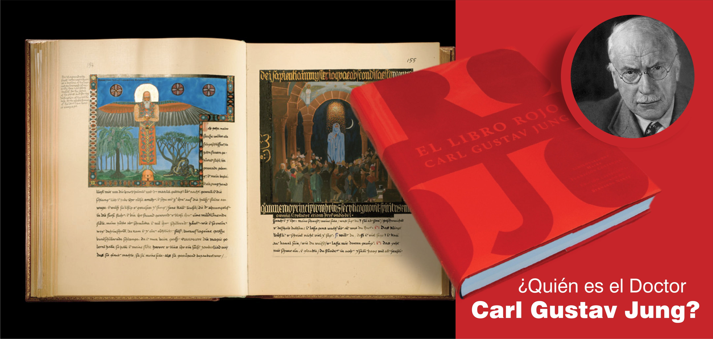

Bienvenidos al Centro Arcoiris
En el CENTRO se imparten conocimientos que nos permiten obtener herramientas para nuestra evolución tanto psicológica, como otros desarrollos más sutiles que nos eleven nuestro nivel de conciencia; para obtener o alcanzar una subjetividad liberada de las ataduras a las que estamos sometidos desde el paradigma materialista y dominante actual. Carl Gustav Jung creó una psicología analítica, PARA LA VIDA, y no solo para los claustros académicos. Todos los seres humanos podemos encontrar en su Psicología, un mapa que nos oriente, un GPS para la búsqueda de nuestro mundo interior y así poder entender nuestra realidad psíquica individual y colectiva.